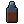
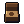
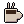
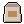
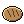
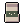
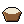

Wiki / Objetos / Comida y bebida
Botella de agua
Alimento
| Atributo | Valor |
|---|---|
| Agua | 500 ml |
| Caducidad | no se echa a perder |
Dónde encontrarlo
Probabilidad mostrada: la parte que ocupa este objeto entre los objetos de la misma rareza en ese tipo de lugar.
| Lugar | Probabilidad en la rareza | Muebles |
|---|---|---|
| Suministros | 50% | Estante, Mostrador, Almacén trasero, Depósito, Caja de herramientas, Escritorio, Armario, Cajón |
| Búnker militar | 50% | Estante, Mostrador, Almacén trasero, Escritorio, Cajón, Armario, Depósito, Caja de herramientas |
| Gasolinera | 10% | Estante, Refrigerador, Mostrador, Depósito, Congelador, Caja de herramientas, Escritorio, Armario, Cajón |
| Restaurante | 9,1% | Alacena, Refrigerador, Cajón, Despensa, Caja registradora, Congelador, Escritorio, Armario, Depósito, Caja de herramientas |
| Salud | 8,3% | Mostrador, Botiquín, Cajón, Refrigerador, Estante, Depósito, Caja de herramientas |
| Escuela | 6,2% | Casilleros de alumnos, Mochilas perdidas, Cocina, Escritorio, Cajón, Armario, Alacena, Refrigerador, Despensa, Congelador |
| Mercado | 5,6% | Estante, Refrigerador, Caja registradora, Almacén trasero, Despensa, Congelador, Escritorio, Armario, Cajón, Depósito, Caja de herramientas |
| Tienda | 4,3% | Estante, Mostrador, Almacén trasero, Depósito, Caja de herramientas, Escritorio, Armario, Cajón |
| Casa | 1,7% | Alacena, Refrigerador, Cajón, Estantería, Despensa, Mesita de noche |
En zombis
| Zombi | Probabilidad | Máx. |
|---|---|---|
| Bombero | 30% | 1 |
| Empleado de supermercado | 40% | 1 |
También: backpack_loot (zumbi mochileiro), corpse_loot, kit inicial, recipe:C05, recipe:R09.
Se fabrica con una receta (mira abajo).
Recetas
Cómo hacerlo
| Receta | Ingredientes | Herramientas | Dónde | Habilidad | Resultado |
|---|---|---|---|---|---|
| Hervir agua |  Agua de lluvia (sin hervir) ×2 | — | Fuego | — | |
| Filtrar agua con un trapo (la mitad de las veces no basta) | Agua de lluvia (sin hervir) ×1, | — | — | — |
Se usa como ingrediente
| Receta | Ingredientes | Herramientas | Dónde | Habilidad | Resultado |
|---|---|---|---|---|---|
| Verduras en conserva (duran 3 meses) | — | Fuego | Agricultura | ||
| Sopa (calienta) | — | Fuego | — | ||
| Café colado |  Café molido ×1, | — | Fuego | — |  Café colado ×2 |
| Pan de olla |  Paquete de harina ×1, | — | Fuego | — |  Pan de olla ×2 |
| Cocinar arroz |  Paquete de arroz ×1, | — | Fuego | — |  Arroz cocido ×3 |
| Cocinar verduras | — | Fuego | — |
Código: agua